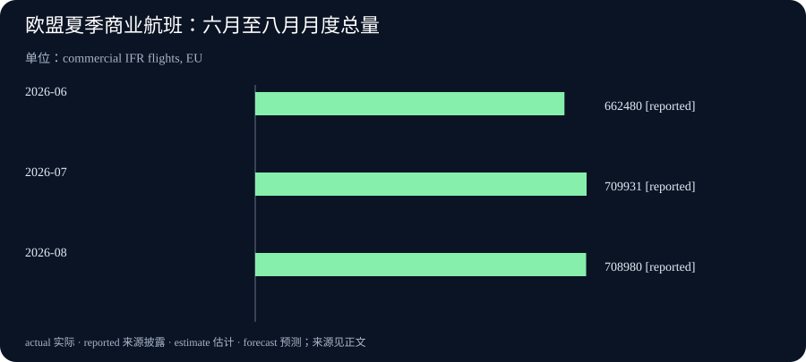

Daily Intelligence
2026-09-22 · Tuesday · Asia/Shanghai 早间正式版。采用截至本次生成时已经公开的一手材料；公司公告、计划安排、统计事实与本刊分析分别表述。真实生成时间见 data.json。
Today’s Thesis｜自主系统要走得远，先让每一次交接说得清
自动驾驶和配送机器人不只需要完成移动，还需要与检查站、收货点及企业系统交换可信状态。今天值得关注的变化，是这些衔接环节开始成为产品与合作的重点。本刊判断：规模化能力不能只看一次任务是否成功，还要看交接能否被确认、异常由谁负责，以及旧流程是否真正接得住新设备。
Executive Summary｜移动能力之外，基础设施开始进入前台
- Kodiak 与 PrePass 宣布连接自动驾驶卡车的增强检查信息和路侧筛查系统，首批实施从得克萨斯州、路易斯安那州开始。这是检查信息衔接，不是全国无人驾驶业务已经上线。公司公告
- Arrive AI 公布在 VARTECH 展示机器人与 Arrive Point 包裹交接的计划。本期核实的是活动公告，不是现场独立测试结果。演示安排
- Arrive AI 另披露与 DXC 合作的更多细节，方向是大型制造场景及现有企业系统整合。合作意向与可验证收益仍需分开。业务背景
- Eurostat 新公布的欧盟八月商业航班量同比增加 2.3%。这提供运输活动背景，不直接代表货运需求或自主物流市场收入。官方统计
今天最有用的阅读方法，是把“能运行”“能交接”“能持续经营”分别检查。某个环节进展值得重视，但不能让它替整个业务链条提供证明；新闻中的规模化愿景，仍应回到可观察的运行记录。
AI Daily｜卡车之外的系统，也需要理解自动驾驶
Kodiak 与 PrePass 的 9 月 21 日公告称，合作将由受过 CVSA 培训的检查员完成的增强检查信息接入既有执法基础设施。路侧人员可以核验信息、授权绕行检查站或提供进一步指令。公司同时仍把公共公路无人驾驶商业运营的推出放在今年年底的准备计划中。原始公告
公告明确，这项合作不替代增强检查程序。本期不将信息接通解释为车辆获得了无限制通行权，也不把两州起步写成全美部署完成。车辆本体能力、检查制度与具体运营范围，属于不同层面的条件。
本刊技术分析：一个自主系统即使能独立完成主要动作，也可能在组织边界遇到困难。原来由司机口头解释、出示或确认的信息，进入无人场景后，需要转换成对方系统能够识别、验证和处理的记录。这个问题并不等同于再训练一个更大的驾驶模型。
值得追问的工程问题包括：记录是否绑定正确车辆与本次任务，状态是否仍在有效期内，网络中断时如何处理，以及指令是否已经被接收。这里列出的是验证问题，不代表公告已披露所有实现。只有把信息语义说清楚，双方才不会各自认为对方已经完成了必要动作。
另一个边界是拒绝与接管。可靠流程不仅需要一条顺利通过的路径，还需要让相关人员能够识别不满足条件的情形，并知道如何停止、转交或升级处理。本期没有取得该项目的独立运行日志或安全效果测量，因此不据此给出事故风险下降幅度或商业成功概率。
Business Daily｜“送到了”与“完成交付”，中间还有一段生意
Arrive AI 的 9 月 21 日公告安排在康涅狄格州 Uncasville 的 VARTECH 活动中，与 Nexus AMR 展示地面机器人向 Arrive Point 交接包裹。公司将该产品定位为可供不同承运方式使用的安全、异步交付端点，使接收方不必在投递瞬间出现。公告与产品描述
9 月 18 日的另一份公告，则补充了此前已在第二季度业绩公告披露的 DXC 合作。公司表示，方向是把交付端点引入大型制造园区，并借助系统集成能力对接现有运营和信息系统。这不是 9 月 21 日刚签订的新合作；本期也没有取得客户级收入、部署数量或经独立核验的投资回报。合作细节
本刊商业分析：异步交付的潜在价值，是减少双方必须同时到场的协调成本。不过，存放空间、维护、网络、权限管理和异常处理都会产生费用。只有把这些支出和节约放在同一条业务流程里，才可能判断购买一个端点是否划算，不能单看某一次交接少用了多少秒。
系统集成也不只是接通接口。企业需要明确交接记录怎样进入库存或工单系统，谁可以修改状态，设备停用时谁负责通知，以及更换供应商时数据和流程如何迁移。设备安装完成，与业务部门愿意按新记录结算或验收，是两种不同进度。
对采购方，更有价值的试点可能是一条稳定、范围清楚的路线：约定物品种类、接收责任与异常上限，再记录一段连续运行期。演示能够说明某种动作有机会实现，经营证据则应覆盖重复使用、维护和不顺利的日子。此处是本刊提出的评价框架，不是对本次展会结果的评定。
Macro Observation｜欧洲航班仍在增长，但不要把架次当成收益
Eurostat 9 月 21 日公布，欧盟 2026 年六月、七月和八月的商业航班分别为 662,480、709,931 和 708,980 架次；八月同比增长 2.3%。数据来自 Eurocontrol，涵盖按仪表飞行规则执行的定期和非定期商业客运、货运及邮件运输航班。统计原文及方法说明
本期采用的是航班数量，不是乘客人数、货物重量或利润。月度总量也受到月份天数与季节安排影响：六月为三十天，七月、八月为三十一天，不能仅凭三根柱子的高低认定需求加速。本图不宣称这些数值经过季节调整。
本刊宏观分析：运输活动指标能帮助观察系统正在处理多少运行任务，却不能独立说明每次任务的经济价值。相同航班数量可能对应不同机型、载荷和航线组合；企业收入与成本又取决于更多条件。读者需要先识别统计单位，才能决定它与自己的业务判断有多大关系。
欧洲航空与美国地面自主物流属于不同市场。本期将它们并置，是为了提醒读者区分运行次数和交付价值，并非主张航班增长会直接拉动这些公司的订单。跨行业类比可以产生问题，但不能代替市场规模测算；没有直接资料时，应保留这条因果链上的空白。
Signal Dashboard｜把四种进展放在各自的证据层级
| 信号 | 当前证据 | 不能直接推出 | 值得补充的验证 |
|---|---|---|---|
| 路侧检查衔接 | 公司宣布首批实施 | 全国商业运营完成 | 实际覆盖、异常处置记录 |
| 机器人交接 | 展会演示安排 | 长期可靠性或普遍兼容性 | 连续任务、失败与恢复记录 |
| 制造场景整合 | 公司披露合作方向 | 客户收益已经兑现 | 验收范围、成本和使用数据 |
| 欧盟航班活动 | 官方月度架次数值 | 货量、利润或自主物流订单 | 对应业务口径的补充数据 |
来源对应前文原始公告和统计。证据未披露，不等于结果为零；反过来，没有反例也不能证明所有承诺都已经实现。对同一个项目，技术、运营和商业验证可以处在不同阶段。
Deep Insight｜真正的自主性，包含交接失败之后的安排
以下是本刊机制分析，而非公司已披露的产品功能。想象一项跨系统任务：设备离开出发点，移动到目标位置，交出物品，业务系统随后确认任务完成。人们容易把其中最显眼的移动当作全部过程，但只要最后一个确认没有发生，发货方、接收方和设备就可能对同一件事保留不同理解。
第一层问题是完成的定义。进入目标区域、打开储物门、检测到物品和接收方确认，并不是同一个事件。如果把较早的事件直接写成最终完成，账面上可以出现很高的成功率，现实中却仍有找不到物品或责任不清的情况。因此，评价自动化之前，应先让参与方共同确定什么状态才算交付结束。
第二层是等待的处理。异步交付并没有让等待消失，而是可能把人的现场等待转换为空间占用和系统待办。这种转换有时很有价值，但它也需要容量安排：物品久未领取、端点已满或任务暂时中止时，后续任务怎样受影响？成本可能从一种资源转移到另一种资源，不能因为人离开了现场就不再记录。
第三层是重复与遗漏。网络超时不一定意味着动作没有执行；重新发送请求，也可能让同一件事被处理两次。一个稳健方案需要让业务记录能辨认同一任务，并允许在不确定状态下核对结果。这里不是建议所有系统采用同一种技术实现，而是强调“没有收到确认”与“确认失败”应当可以区分。
第四层是例外的归属。正常流程可以由多个供应商共同完成，但异常发生时不能只有一串互相转接的联系人。谁有权停止设备，谁能安排人工处理，谁维护记录，谁向业务使用者解释延迟，需要在试点前确定。人工参与并不自动证明自主技术失败；没有预先安排的人工救火，才会让实际成本难以估计。
第五层是把局部表现连接到完整任务。某个设备每次动作都很快，整条流程仍可能受制于排队、审核或后续录入。试点应从业务提出需求开始，跟踪到最终验收，同时记录中途等待与人工工作。这样才能看到瓶颈究竟缩短了，还是被移动到另一个部门；局部速度不能自动相加成整体收益。
最后是学习和扩展。一个范围清楚的试点，可以积累哪些条件下容易出现问题，而不必一开始就证明所有场景都适用。扩展到新地点时，应重新检查物品类型、环境、权限和接收习惯的差别。复制设备比复制稳定流程容易，前一个站点运行良好，也不能替新站点省掉必要验收。
这些原则同样适用于纯软件智能体：生成文稿与提交文稿、提交与接收、接收与公开可见，是不同事件。让每一步留下能够核对的证据，并为中断安排恢复方式，才能让用户减少重复确认。自主性不是对人的承诺越来越大胆，而是对任务当前处境的描述越来越准确。
Tomorrow Watch｜接下来需要观察什么，而不是预言什么
- 对 VARTECH 演示，等待实际演示材料及测试条件；本期未独立核实现场完成情况，不把计划自动更新为成功。活动公告日期为 9 月 21—22 日，不能因进入次日就假定所有环节已完成。活动安排
- 对检查衔接与制造整合，关注实际运行范围、异常记录和客户验收材料。没有新披露时继续保留当前证据状态，不用合作伙伴名单代替部署数量。
- 对宏观背景，继续按相同口径记录后续月度数据与修订，不从航空架次推算地面机器人的收入。本期没有核实一个确定在明天公布的新统计日程。
观察清单的作用是明确下一项证据，而非制造每天必有结论的压力。一个没有变化但记录清楚的状态，也比未经核实的进展描述更有用。
One Chart｜欧盟夏季商业航班量：月度总量，不是季调趋势

| 参考月份 | 商业航班架次 | 数据状态 |
|---|---|---|
| 2026 年 6 月 | 662,480 | 官方披露 |
| 2026 年 7 月 | 709,931 | 官方披露 |
| 2026 年 8 月 | 708,980 | 官方披露 |
范围为欧盟、按仪表飞行规则执行的商业航班，单位为架次。reported 表示来源披露，不是本刊估计或预测。每月天数不同，不用相邻柱子的差异代替经调整的增长率，也不把航班总量换算成旅客或货运量。同一统计版本
Quote of the Day｜先理解约束，才谈得上驾驭
“Nature to be commanded must be obeyed”
— Francis Bacon
中文：要驾驭自然，必须遵循自然。
出处：《Novum Organum》第一卷，箴言 III，Spedding 英译版本。本期节引原句中的一个分句，原文讨论认识原因与实现结果的关系。原文转录
本刊解读：把这句话借用于工程，不是要求人接受一切现状，而是提醒我们，可靠改造必须先认识约束。能准确说出系统何时不能执行，也是一种重要能力。
Action Items｜给一条交付流程做一次完整检查
1. 选一项正在自动化的任务，写清启动、到达、交接和最终验收分别由什么证据确认，避免把中间状态当成完成。 2. 在受控测试环境中检查超时、重复请求和接收方暂时不可用的情形；提前安排处理人、停止条件及恢复方式，不在生产现场随意制造故障。 3. 评估供应商时，分开索取演示、连续运行和业务验收材料；成本计算纳入维护、等待与人工异常处理，保留尚未取得的数据，不以零填补。